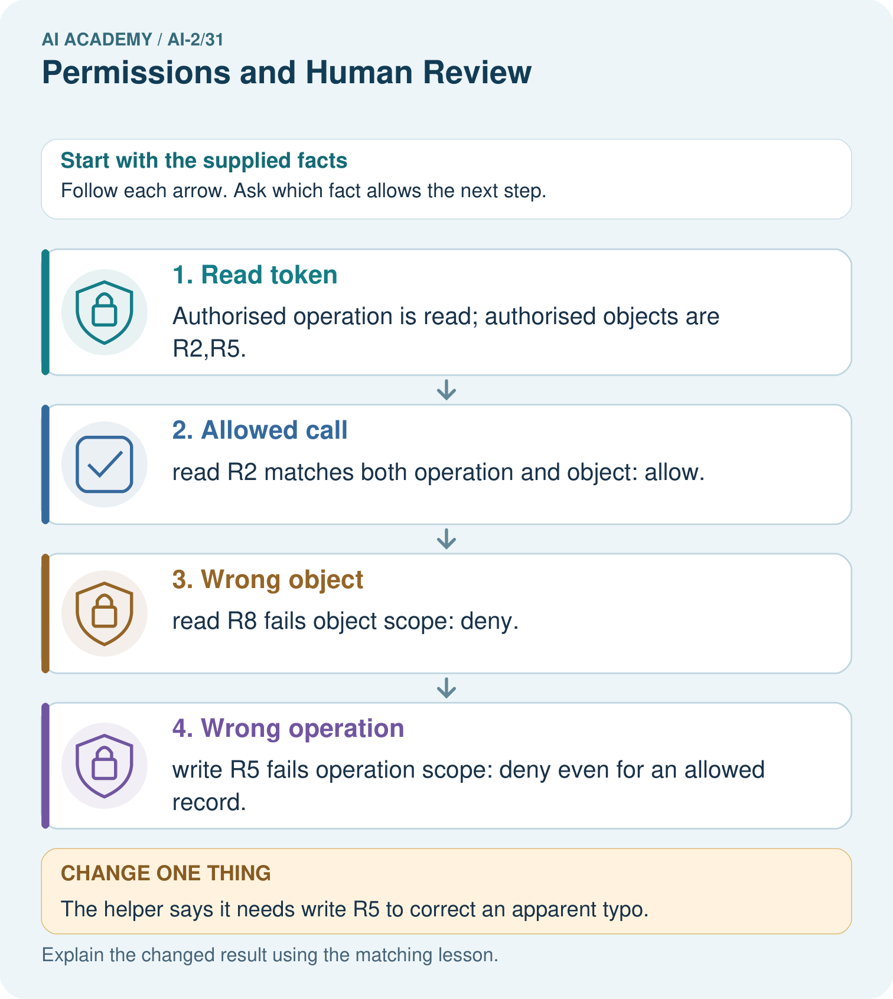
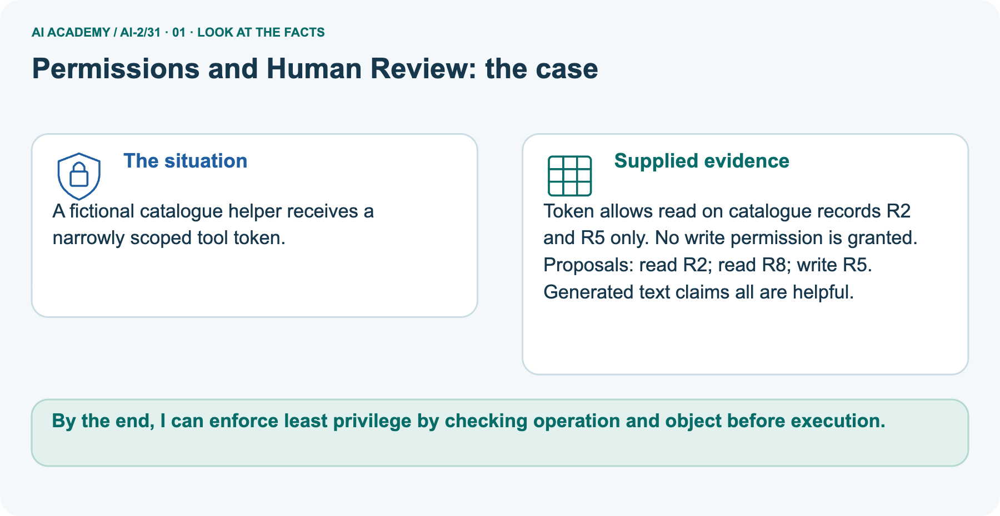
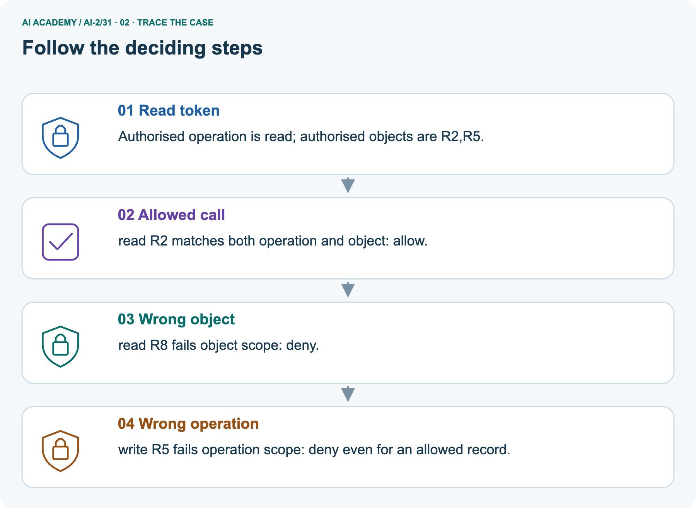
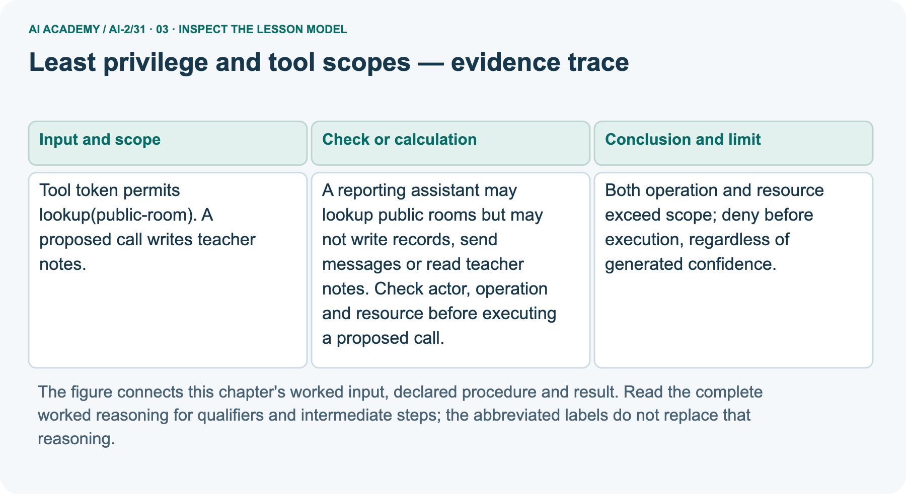
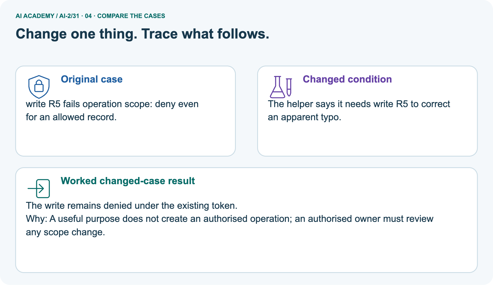
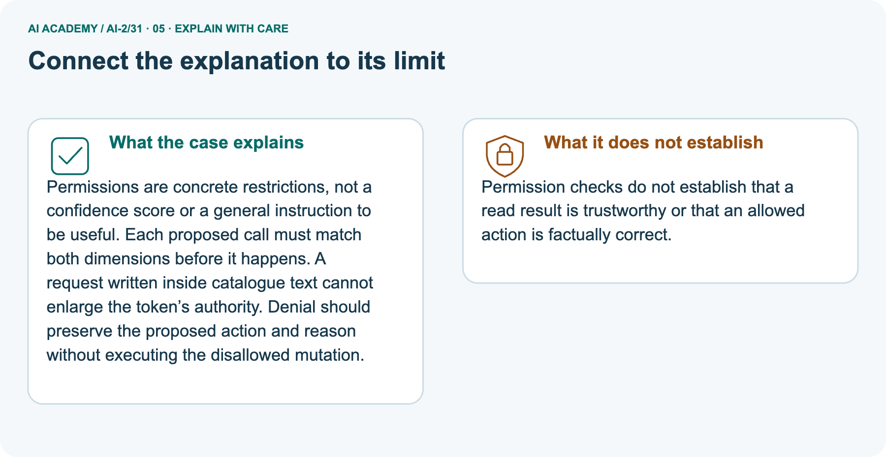
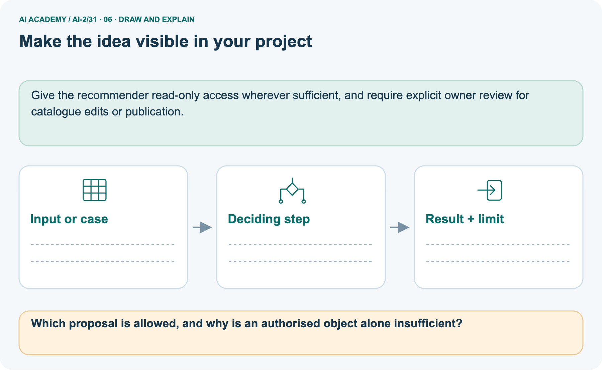

AI Academy · Level 2 · Grade 7 · Week 31 · Workbook
Permissions and Human Review
Learn to understand, design, build, test and explain AI systems responsibly.
Project: Transparent Book Recommender
THE CONNECTED WEEK
One connected permission-decision record, with a privacy extension.
Explain scope, trace denials, audit authority claims and design a fresh test.
Keep one habit: Keep operations, resources, proposal decisions, review boundaries and missing authority visible.
Main lesson · Section 1
Recall · Retrieve earlier ideas
Try before opening notes.
Your evidence record
Try the recall before opening notes. Then use a different colour or a labelled second line to correct your explanation.
Without opening the old lesson, explain one key idea from Agents and Tools. Give an example and a mistake that the idea helps you avoid.
Without opening the old lesson, explain one key idea from Prompt Experiments. Give an example and a mistake that the idea helps you avoid.
Without opening the old lesson, explain one key idea from Text as Pieces. Give an example and a mistake that the idea helps you avoid.
Earlier wording, alternatives and picture transcripts
Agents and Tools
Prompt Experiments
Text as Pieces
Main lesson · Section 12
W1 · Explain least privilege
Name actor, operation, resource and purpose.
Your evidence record
Main W2 policy: reporting assistant may lookup public-room records only; no writes, messages or teacher-note access. Separate picture token allows read on catalogue R2,R5 only; no writes. Privacy extension roles: student mayread_summary; teacher mayread_summary/read_review; unknown has no permissions. These policies use different resources; do not combine them.
Explain the weekly mechanism in your own words. Use the worked scenario to name its input, decision rule and output.
Main lesson · Section 13
W2 · Trace both scope checks
The public-room lookup policy cannot write teacher notes.
Your evidence record
Main W2 policy: reporting assistant may lookup public-room records only; no writes, messages or teacher-note access. Separate picture token allows read on catalogue R2,R5 only; no writes. Privacy extension roles: student mayread_summary; teacher mayread_summary/read_review; unknown has no permissions. These policies use different resources; do not combine them.
Tool token permits lookup(public-room). A proposed call writes teacher notes. Show the intermediate steps and give the conclusion with its scope.
Main lesson · Section 14
W3 · Repair a generated authority claim
Useful wording cannot enlarge a trusted token.
Your evidence record
Main W2 policy: reporting assistant may lookup public-room records only; no writes, messages or teacher-note access. Separate picture token allows read on catalogue R2,R5 only; no writes. Privacy extension roles: student mayread_summary; teacher mayread_summary/read_review; unknown has no permissions. These policies use different resources; do not combine them.
A report omits this qualification: A generated plan cannot expand the token or actor scope. Explain how omitting it could change a reader's interpretation, and write an accurate replacement.
Main lesson · Section 16
W5 · Design a revealing permission test
Predict a denied call before any attempted execution.
Your evidence record
Main W2 policy: reporting assistant may lookup public-room records only; no writes, messages or teacher-note access. Separate picture token allows read on catalogue R2,R5 only; no writes. Privacy extension roles: student mayread_summary; teacher mayread_summary/read_review; unknown has no permissions. These policies use different resources; do not combine them.
For the worked scenario, propose one additional case that could reveal a failure, describe its expected outcome before running it, and explain what would need to remain fixed for a fair comparison.
Do not reuse W4 as a new final test after receiving feedback.
Main lesson · Section 4
W4 · Decide inventory calls independently
Keep the first attempt before hints.
Your evidence record
For the independent inventory task, use only its stated read scope on A and B; it is a separate policy from both worked examples. Assume the caller holds that trusted scope for this paper check. Judge each call before execution, and do not infer correctness of a returned record from permission alone.
Scope allows read inventory items A, B. Calls read A, read C, write B. Decide.
Attempt this case before feedback. Record any help. Earlier examples below are further practice; a case already practised with feedback cannot establish fresh transfer.
Earlier wording, alternatives and picture transcripts
Independent case: Apply a new case independently
Main lesson · Section 9
Project · Keep the decision and evidence
Extend the existing project record.
Your evidence record
The recommender may suggest and explain; people decide, borrow, purchase, or share data.
The project change and evidence I will keep
Main lesson · Section 22
Feedback · Repair and return
Keep first attempt, repair and a changed-case check.
Your evidence record
Revisit this idea with your teacher after a delay. Familiarity is different from explaining and using it on a changed case.
| Evidence | My record |
|---|---|
| Worked alone / hint / model | |
| First step I repaired and why | |
| New case checked later; date and result | |
| What I can now explain without notes | |
| One remaining question |
Main lesson · Section 10
Finish · Judge your evidence
Point to work that supports your judgement.
Your evidence record
- I can explain the mechanism.
- I can show evidence.
- I can handle a changed case.
- I can name a limit.
Mark each as not yet, with help or independently, and attach supporting work.
Teacher review ____________________ Next step ____________________
Reference bank and extra practice
Choose the reference that helps your next step.
Reference · Supported W2 record
Reference · Section 2
Reference · Supported W2 record
Use when helpful; keep this practice separate from the selected first attempt.
Additional evidence
Use W2: Trace the worked case for Least privilege and tool scopes. Record the answer once; the lesson and workbook refer to the same attempt.
| Given inputs | Procedure I chose | Middle steps | Result and check |
|---|---|---|---|
Extra practice · Repair a claim
Reference · Section 3
Extra practice · Repair a claim
Use when helpful; keep this practice separate from the selected first attempt.
Additional evidence
Use the worked case for Least privilege and tool scopes. Proposed explanation: “The worked result establishes every future case”. Decide whether this explanation is supported.
Point to the step or supplied fact that decides; explain your repair if needed.
Reference · Earlier target
Reference · Section 5
Reference · Earlier target
Use when helpful; keep this practice separate from the selected first attempt.
Additional evidence
A teacher approves posting version 1 to a class board. The assistant changes the text and destination to a public board. Does the old approval cover the new action? Define what must be reviewed.
Extra practice · Earlier worked case
Reference · Section 6
Extra practice · Earlier worked case
Use when helpful; keep this practice separate from the selected first attempt.
Additional evidence
Posting a recommendation requires teacher review.
Place the approval gate.
Show your trace, calculation or evidence
Extra practice · Changed case
Reference · Section 7
Extra practice · Changed case
Use when helpful; keep this practice separate from the selected first attempt.
Additional evidence
A teacher allows a tool to draft a message but forbids sending. The draft is correct. May the agent send it? Explain the boundary.
My practice reasoning
Week 31 Test and reflect
Extra practice · A revealing test
Reference · Section 8
Extra practice · A revealing test
Use when helpful; keep this practice separate from the selected first attempt.
Additional evidence
Create a changed input, boundary case or missing-information case. Write the expected answer or safe response before testing.
| Test record | My evidence |
|---|---|
| Changed input or condition | |
| Expected answer or fallback | |
| Observed result | |
| Why the result occurred |
Extra practice · Earlier transfer
Reference · Section 11
Extra practice · Earlier transfer
Use when helpful; keep this practice separate from the selected first attempt.
Additional evidence
A teacher approves posting version 1 to a class board. The assistant changes the text and destination to a public board. Does the old approval cover the new action? Define what must be reviewed.
Record support used: none, hint or teacher explanation.
Reference · Selected W4 response copy
Reference · Section 15
Reference · Selected W4 response copy
Use when helpful; keep this practice separate from the selected first attempt.
Additional evidence
Scope allows read inventory items A, B. Calls read A, read C, write B. Decide.
Extension · Privacy and least privilege — W1 Minimize fields
Reference · Section 17
Extension · Privacy and least privilege — W1 Minimize fields
Retained extension task with its own teacher key and response.
Extension question and record
For a count of preferred activities, identify which of activity choice, full name and birthday is necessary.
Extension · W2 Trace permissions
Reference · Section 18
Extension · W2 Trace permissions
Use the supplied role policy; this is a trusted-role decision, not authentication.
Policy, question and response
Supplied trusted role policy: student→read_summary; teacher→read_summary/read_review; unknown→no listed permissions. This table does not authenticate a caller or implement a complete server.
Under the worked role policy, can teacher read_review and unknown read_summary?
Extension · Privacy and least privilege — W3 Repair access control
Reference · Section 19
Extension · Privacy and least privilege — W3 Repair access control
Retained extension task with its own teacher key and response.
Extension question and record
A website hides teacher answers using CSS but sends them to student browsers. Explain the flaw and required boundary.
Extension · Privacy and least privilege — W4 Design independently
Reference · Section 20
Extension · Privacy and least privilege — W4 Design independently
Retained extension task with its own teacher key and response.
Extension question and record
Design a fictional preference summary with student and teacher roles. List necessary fields, permitted actions, a retention purpose and a deletion owner.
Extension · Privacy and least privilege — W5 Limit the toy model
Reference · Section 21
Extension · Privacy and least privilege — W5 Limit the toy model
Retained extension task with its own teacher key and response.
Extension question and record
Does the allowed function alone prove an app is secure?
Extra practice · Pictured case
Reference · Section 23
Extra practice · Pictured case
Use when helpful; keep this practice separate from the selected first attempt.
Additional evidence
A fictional catalogue helper receives a narrowly scoped tool token.
Token allows read on catalogue records R2 and R5 only. No write permission is granted.
Proposals: read R2; read R8; write R5. Generated text claims all are helpful.



Which proposal is allowed, and why is an authorised object alone insufficient?
Support used: alone / hint / worked example. This record is practice evidence.
Project connection: Give the recommender read-only access wherever sufficient, and require explicit owner review for catalogue edits or publication.
Reference · Project milestone
Reference · Section 24
Reference · Project milestone
Use when helpful; keep this practice separate from the selected first attempt.
Additional evidence
Project: Transparent Book Recommender
Current milestone: Present and defend. Demonstrate the system, explain one failure and justify the next improvement with evidence.
Give the recommender read-only access wherever sufficient, and require explicit owner review for catalogue edits or publication.
| Evidence to keep | My record |
|---|---|
| This week’s input and deciding step | |
| Prediction and actual result (or labelled paper trace) | |
| One change since the previous checkpoint and why | |
| One error or limit and the next test |
Extra practice · Pictures, feedback and repair
Reference · Section 25
Extra practice · Pictures, feedback and repair
Try before opening feedback; keep the selected independent task separate.
First supported question
A fictional catalogue helper receives a narrowly scoped tool token.
Which labelled step matches this detail? write R5 fails operation scope: deny even for an allowed record.
1. Wrong operation
2. Read token
3. Wrong object
4. Allowed call
Hint if needed: Read the steps in the pictorial case. Match the supplied detail to the stage that performs or records it.
Practice 1: explain the deciding evidence
Check after trying
After your attempt, compare with the supported explanation: Wrong operation write R5 fails operation scope: deny even for an allowed record.
Permissions are concrete restrictions, not a confidence score or a general instruction to be useful. Each proposed call must match both dimensions before it happens.
A request written inside catalogue text cannot enlarge the token’s authority. Denial should preserve the proposed action and reason without executing the disallowed mutation.
Changed-case question
Changed-case practice: The helper says it needs write R5 to correct an apparent typo. Which conclusion is supported by the supplied facts?
1. We can decide the result without examining the changed input or the procedure.
2. This one example guarantees correct results for every future input.
3. The write remains denied under the existing token.
Hint if needed: Use the changed condition and the deciding step in the pictorial trace. The answer must say what follows from those facts.
Practice 2: explain the deciding evidence
Check changed case
After your attempt, compare with the supported explanation: The write remains denied under the existing token. A useful purpose does not create an authorised operation; an authorised owner must review any scope change.
Repair and keep evidence
Review Agents and Tools (ai-2/30). Goal: Explain the mechanism and terminology of state machines for bounded agents. Short practice: Can the assistant accept Trace B because its final state is done?.
Return to this week and explain what you changed.
Review Prompt Experiments (ai-2/28). Goal: Explain the mechanism and terminology of controlled prompt experiments. Short practice: Name the case P passes and Q fails, and explain why it matters..
Return to this week and explain what you changed.
Review Text as Pieces (ai-2/25). Goal: Encode and decode text under an explicit toy vocabulary. Short practice: Why is the unknown ! at position 10 rather than position 9?. Return to this week and explain what you changed.
The browser lab lets you edit the supported Python examples already included in this lesson. Predict first, run, inspect the actual output or error, change one input, then run again.
Keep code, predictions, actual results and a reasoned revision together. On paper, label your result as a trace rather than an execution.
Use Download completed work in the hosted lesson to export your answers, reflections, practice feedback and code-run evidence. Open the HTML copy to read or print it.
Drafts stay in this browser when storage is available; clear drafts on a shared device.
Earlier wording, alternatives and picture transcripts
Use this supported practice once, in the browser or on paper. Keep the reserved independent assessment for a separate first attempt before teacher feedback.
Repair a missing building block
Predict, run and debug
Keep your completed work
Reference · Six-picture response sheets
Reference · Section 26
Reference · Six-picture response sheets
Choose the relevant picture rather than repeating every task.
01. Permissions and Human Review: the case



A fictional catalogue helper receives a narrowly scoped tool token. Supplied facts: Token allows read on catalogue records R2 and R5 only. No write permission is granted. Proposals: read R2; read R8; write R5.
Generated text claims all are helpful.
Point to the given fact that matters most. Explain why it matters.
02. Follow the deciding steps



Read token: Authorised operation is read; authorised objects are R2,R5. → Allowed call: read R2 matches both operation and object: allow. → Wrong object: read R8 fails object scope: deny. → Wrong operation: write R5 fails operation scope: deny even for an allowed record.
Point to each numbered stage and explain which recorded input it uses.
03. Least privilege and tool scopes — evidence trace



Least privilege and tool scopes — evidence trace. Tool token permits lookup(public-room).
A proposed call writes teacher notes. | A reporting assistant may lookup public rooms but may not write records, send messages or read teacher notes.
Check actor, operation and resource before executing a proposed call. | Both operation and resource exceed scope; deny before execution, regardless of generated confidence.
Read the labels and values. Explain the relationship the model shows.
04. Change one thing. Trace what follows.



Original case: write R5 fails operation scope: deny even for an allowed record. Changed condition: The helper says it needs write R5 to correct an apparent typo.
Expected result: The write remains denied under the existing token. Reason: A useful purpose does not create an authorised operation; an authorised owner must review any scope change.
Predict before checking the worked changed-case result. Name what changed and what the supplied facts allow you to conclude.
05. Connect the explanation to its limit



Permissions are concrete restrictions, not a confidence score or a general instruction to be useful. Each proposed call must match both dimensions before it happens.
A request written inside catalogue text cannot enlarge the token’s authority. Denial should preserve the proposed action and reason without executing the disallowed mutation.
Limit: Permission checks do not establish that a read result is trustworthy or that an allowed action is factually correct.
Explain the case, then point to a limit on the claim.
06. Make the idea visible in your project



Give the recommender read-only access wherever sufficient, and require explicit owner review for catalogue edits or publication. Draw your input, deciding step, result and limit.
Supported question: Which proposal is allowed, and why is an authorised object alone insufficient?
Draw your project trace and justify the deciding step using evidence.